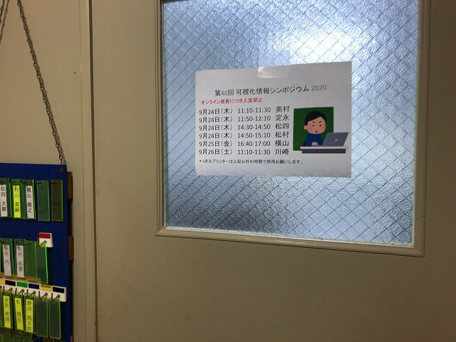
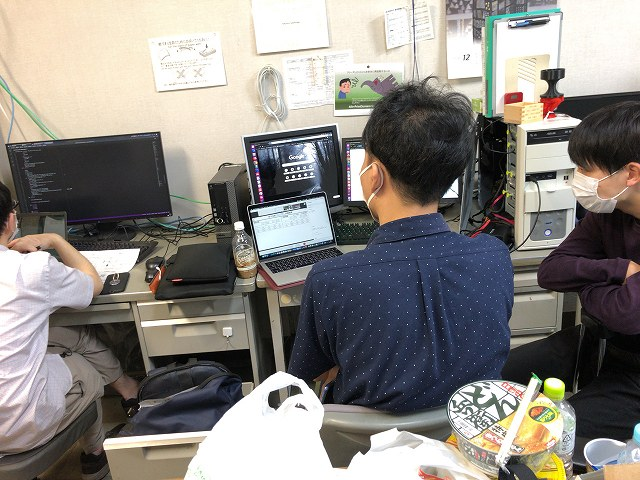
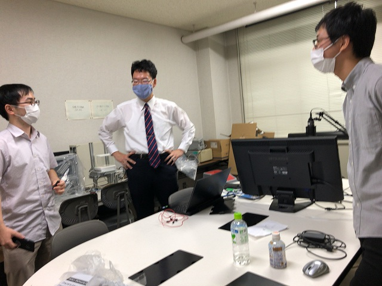
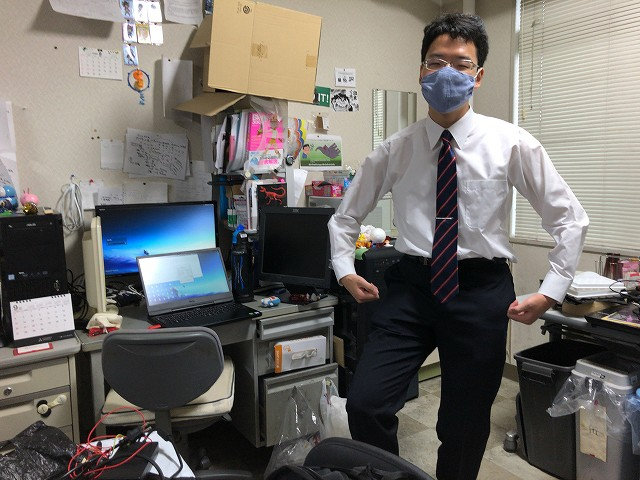

| ・ 第48回可視化情報シンポジウム@オンライン (R02.09.24-26) | |||
第48回可視化情報シンポジウムで、 M2のY山さんが流体計測の研究：「PIV計測を用いたタイヤ周り流れの3次元渦構造の可視化」、M4さんが光計測の研究「位相回復ホログラフィにおけるTamuraの方法を用いた粒子奥行き位置検出精度の検証」を発表しました。 M1は、O村さんが音響計測の研究：「高時間分解能TPMSを用いたタイヤ内空洞共鳴音計測」、M村さんが光計測の研究「２波長逐次位相回復ホログラフィによる３次元粒子位置検出に関する研究」、 S永さんが流体計測の研究：CUDAのStreamを用いたGPU-PIVの高速化、K崎さんが流体計測の研究：RGB depth-from-defocusによる2次元3成分速度計測法の較正をそれぞれ発表しました。はじめてということで、 ふたり同室で連続しているとマイクの切替えで時間をとられたり、会場の時計が見えなくて発表者は自分がスタートしたところからカウントするとかなど、オンライン特有のトラブルありました。 准教授の人曰く「工学部なので技術で解決する！」とのこと。 |
|||
|

順番にFの部屋で |

別室で発表を見守る | ||
|

切替えでもたついて詰んだｗ |

もう1セット、マイクロフォンシステムお願いします | ||